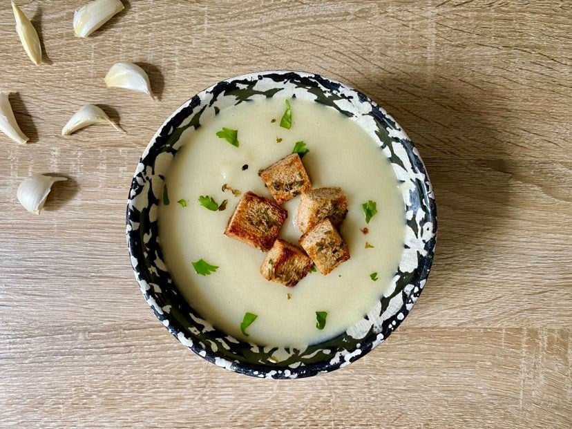

60 Clove Garlic Soup

Description
This is the soup of my dreams. Made with sixty cloves of garlic - that's right sixty cloves of garlic, this soup is for the hardcore garlic lovers out there.
Ingredients
- 60 cloves of garlic (about 6 heads)
- Olive oil
- 2 yellow potatoes
- 1 yellow or white onion
- 1 1/4 cups milk
- 1 cup vegetable broth
- 1 tsp salt
- Parsley
- Croutons
Steps
- Preaheat oven to 400F
- Slice the very top off of each head of garlic leaving cloves exposed.
- Drizzle about 2 teaspoons of olive oil onto each garlic head and sprinkle with salt.
- Wrap each garlic head in tinfoil.
- Roast the garlic at 400F for 1 hour.
- Meanwhile, dice onions and potato.
- Boil onions and potatoes for 12-15 until tender.
- Remove garlic from oven and let cool.
- Once garlic is cool, squeeze the cloves out of the skin and discard skin.
- Blend together cloves, potatoes, onion, vegetable broth, milk, salt, and parsely.
- Serve topped with parsely and croutons.
Recipe by PopSugar